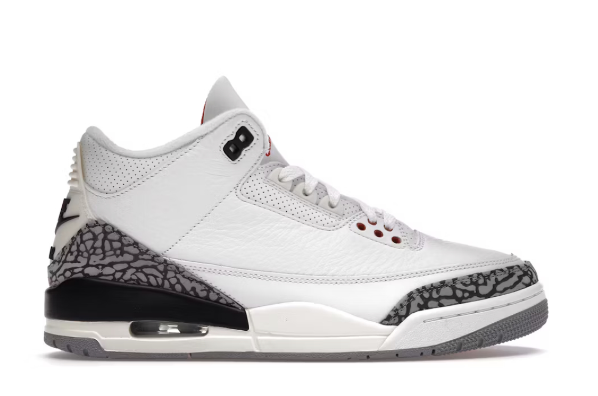
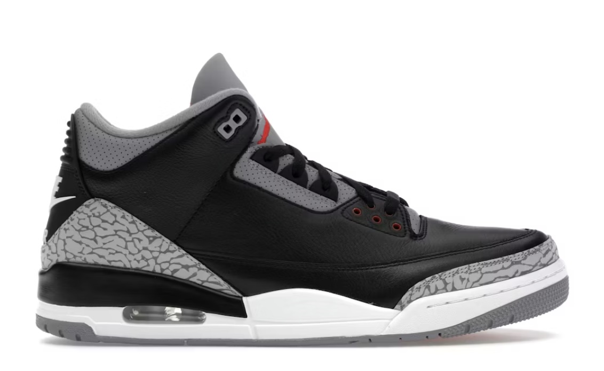
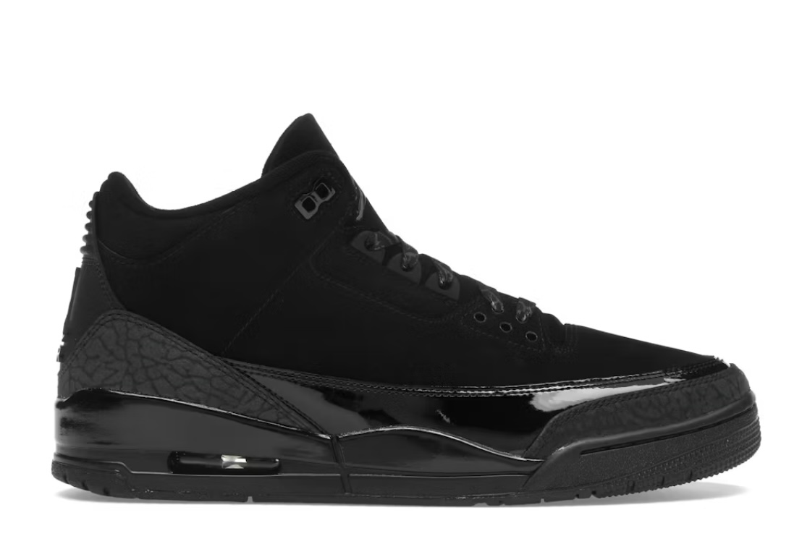

Air Jordan 3 – Przełom z elephant printem i Jumpmanem
Air Jordan 4 z 1989 roku, kolejny majstersztyk Tinkera Hatfielda, czerpie z wojskowej mitologii – inspirowane niemieckimi czołgami z II wojny i lotniczymi MUCK oxfordami. MJ nosił je podczas drugiej wygranej w Slam Dunk Contest i playoffów Bulls. Przełomowa konstrukcja: siatkowe panele po bokach dla wentylacji (pierwsze w serii), plastyczne wing eyelets (skrzydełka) zamiast klasycznych dziurkowan na sznurówki, overkill detali jak logo na języku, Jumpman na podeszwie i speckles na midsole. Widoczna Nike Air unit w pięcie dla responsywnego bounce’u, gumowa podeszwa z herringbone dla trakcji na parkiecie. Kolorystyki “Military Black” (czarno-szaro-niebieska), “Bred” (czarno-czerwona), “White Cement” czy “Mars” z niebieskim tongue’em podbiły wyobraźnię – “Military” stało się synonimem twardego stylu.
Technicznie: lekka skóra nubuck + syntetyk, stabilny heel counter, lace-up z metalowymi agletami. Hatfield dodał radio wave na midsole, nawiązując do fal dźwiękowych. Kampania z Spike’iem Lee trwała, cementując hype. Kulturowo: ulubione w hip-hopie (Jay-Z, Eminem), inspiracja dla Travis Scott Jordan 4 “Cactus Jack”. Retro wydania jak “Bred 2021” z wyższą jakością crack-free skóry. Ceny resale: 300-3000 USD za rarytasy jak Travis. Wszechstronne: do kosza (doskonała trakcja), streetwearu (z dresami, oversize) czy formalnego twistu. MJ w AJ4 średnio 37 pkt w sezonach dominacji. Konserwacja: Crep Protect spray, miękkie szczotki. AJ4 to buty wojownika – militarna moc spotyka luksus, idealne dla tych, co chcą dominować ulice z klasą. Overkill detali czyni je arcydziełem designu, nie do podrobienia po 35 latach!


